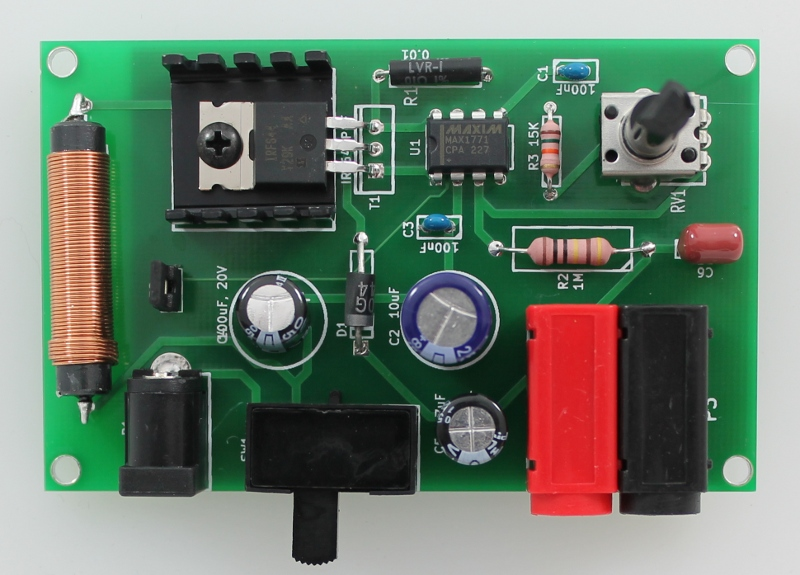
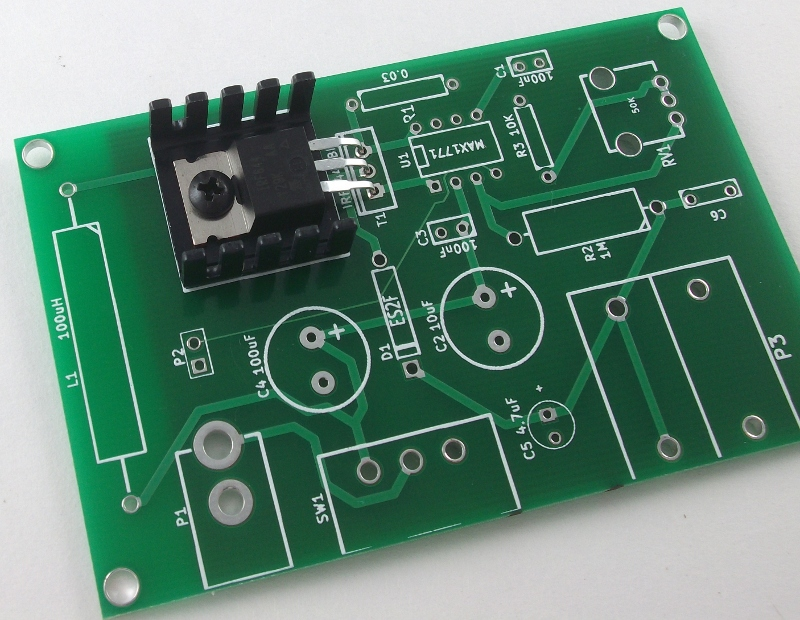
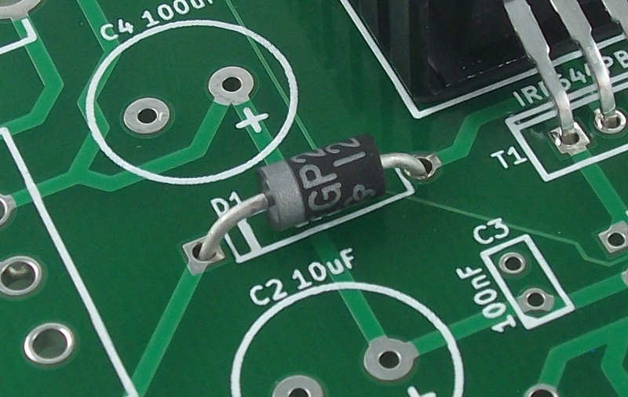
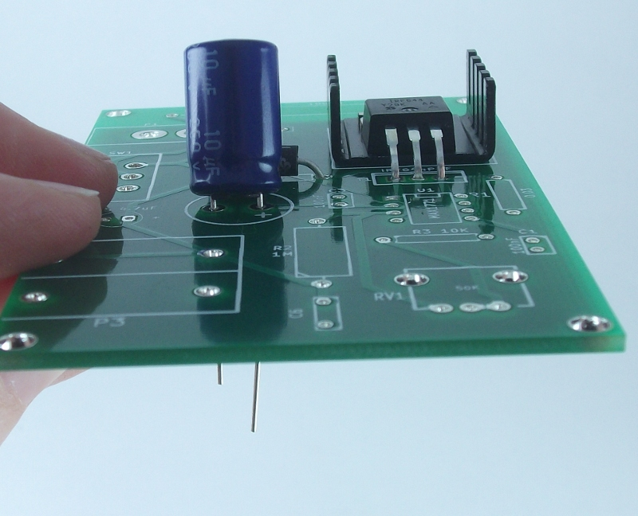
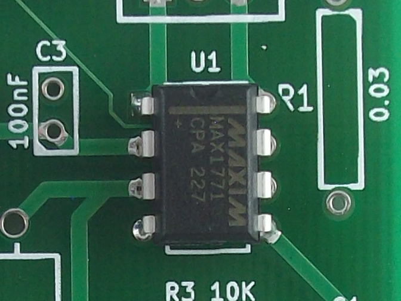

Assembly Step 1: PCB Assembly¶

Solder the through-hole components listed below onto the power supply PCB. To help identify the components, match the red number on the right in the Table to the component number in the image above. Assembly takes approximately 15-30 mins, depending on soldering experience. Note: Instructables has a great soldering section with tutorials and resources. For an Instructable on soldering components onto circuit boards, check out How-to-solder (Steps 4 and 5) by noahw.
PCB Assembly notes¶
- T1 - Heat sink and transistor. Lay the heat sink on the PCB and bend the legs of the transistor so that it lays flat on the heat sink with the holes lined up. Secure in place with the screw and nut.

- D1 - Diode. The silver stripe on the diode is indicated on the silkscreen by a matching line. Orient the diode on the PCB so that the silver stripe on the diode matches the orientation on the silkscreen.

- C2, C4 and C5 - Polarized capacitors. The long leg of the capacitor is positive (anode) and the short leg is the negative (cathode). Insert the capacitors with the anode (long leg) in the pad indicated by the + on the silkscreen;

- U1 - MAX1771 DC-DC controller. Note that this component has a notch on one end which is indicated by a similar shape on the silkscreen for U1 to help you orient the part correctly. Place the component on the PCB so that the notch is in the correct orientation.

- P2 - 2-pin header with jumper: After soldering on the 2-pin header place the jumper onto the pins.
- P3 - Banana jacks. These two components (one red and one black) snap together. Before placing them on the board for soldering press them together with the red banana jack on the left and the black on the right as shown in the images.